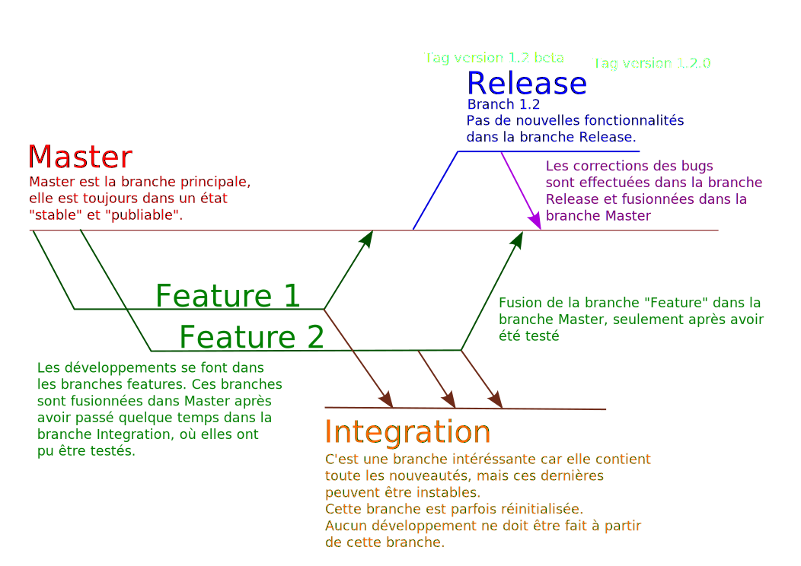

Versioning
Initiation à l'utilisation de Git
Adrien Kühn / @krewh / IIM 2015
Introduction
Problème concret
"Ne touche pas au fichier UserController.php, je suis en train de travailler dessus!"
"Tu te souviens comment on avait fait pour résoudre ce bug sur l'autre projet?"
"Qui a modifié ce fichier? Il ne fonctionne plus!"
Les logiciels de gestion de version sont là pour palier à ces problèmes !
- Subversion (SVN)
- Mercurial
- Git
Subversion
- Développé par CollabNet, puis repris en 2010 par la fondation Apache
- Conçu pour remplacer CVS
- Licence libre
- Centralisé
Commande
$ svn
Mercurial
- Créé et développé principalement par Matt Mackall.
- Mis à disposition du public en 2005.
- Licence libre
- Décentralisé
Commande
$ hg
Git
- Créé en 2005 par Linus Torvalds.
- Licence libre
- Décentralisé
- Utilisé pour le Kernel de Linux, Debian, VLC, Android, Gnome, Qt…
Commande
$ git
Super! Mais à quoi ça sert?
Git suit l'évolution du contenu des fichiers de vos projets.
Il garde également toutes les anciennes versions.
C'est comme une backup, et Git est capable :
- de dire qui a modifié une ligne,
- de dire pourquoi elle a été modifiée,
- si plusieurs personnes ont édité le même fichier, Git fusionne les différentes versions sans tout casser!
En résumé
Git permet de suivre les évolutions de son code, de revenir en arrière si nécessaire, et de travailler à plusieurs!
Fonctionnement
Utilisation
Repositories
Création d'un dépot
$ git init
Le dépot est créé! Un dossier caché .git viens d'être ajouté.
Cloner un dépot
$ git clone url_du_depot
Exemple :
$ git clone https://github.com/AdrienKuhn/cours-git-a2.git
Le dépot est téléchargé, avec tout l'historique de modification des fichiers.
Commits
Méthode de travail
- effectuer des modifications
- tester les modifications
- enregistrer (et donc faire un commit)
Fonctions clés
Lister les fichiers qui ont été modifiés :
$ git status
Voir les lignes qui ont été modifiés :
$ git diff
Tracker des nouveaux fichiers
$ git add fileA fileB fileC dir1/fileD # ou git add -a pour tout ajouter
Faire un commit
$ git commit -m "ma correction de bug"
par exemple "Fix #234 internal server error on url"
Modifier le message du dernier commit
$ git commit --amend
Annuler un commit
$ git reset HEAD^
Annuler le dernier commit ET les modifications sur les fichiers
$ git reset --hard HEAD^
Logs
Historique des commits
$ git log
Push/Pull
Télercharger les nouveautés
$ git pull
2 cas possibles :
- Fast forward si aucun fichier modifié depuis le dernier pull
- Sinon, les modifications sont fusionnées automatiquement
Envoyer les nouveautés
$ git push
Attention, un push est irréversible!
À faire qu'une seule fois par jour si possible.
Faire un commit inverse
$ git revert id_du_commit
Branches
Source : KDE Git Workflow. Schéma simplifié. 
- La fonctionnalité est elle simple à développer?
- Puis-je la faire en une seule fois?
- Suis-je sûr de moi?
Lister les branches
$ git branch
La branche actuelle est symbolisée par une étoile *
Créer une nouvelle branche
$ git branch nom_de_la_branche
Changer de branche
$ git checkout nom_de_la_branche
Fusionner la branche X dans la branche Y
Vérifier qu'on est bien sur la branche de destination Y, puis :
$ git merge X
Stash
Mettre de côté des changements
$ git stash
Réappliquer les modifications
$ git stash apply
Gestion des conflits
Lorsque 2 personnes modifient la même ligne, Git ne sait pas comment effectuer une fusion.
Il laisse alors le choix à l'utilisateur
Les zones de conflits sont indiqués par les symboles suivants :
<<<<<<<<<
Il faut analyser le code et effectuer soi-même la fusion.
Retester tout, une fois satisfait, il reste juste à faire un commit!
Gitignore
Le fichier .gitignore permet de spécifier quels fichiers ou dossier ne doivent pas êtres trackés par git.
Chaque ligne correspond à un fichier ou un dossier.
/vendor
/node_modules
.env
/.idea
/public/css
Les fichiers àjoutés au .gitignore n'apparaitront plus dans git status, même s'ils sont modifiés.
Installation de Git
Mac OS
Via l'installateur : https://code.google.com/p/git-osx-installer
Dans le terminal entrez les commandes suivantes :
$ git config --global color.diff auto
$ git config --global color.status auto
$ git config --global color.branch auto
Puis :
$ git config --global user.name "Prénom NOM"
$ git config --global user.email adresse@email.com
Windows
Installer Git For Windows : https://git-for-windows.github.io/
Linux
Base Debian :
# aptitude install git-core
Base RedHat :
# yum install git
Pour vous faciliter la vie
Vous pouvez créer une paire de clé SSH, afin de communiquer avec GitHub plus rapidement.
Votre mot de passe ne vous sera plus demandé à chaque Pull ou Push, uniquement la première fois (si vous avez défini un mot de passe sur votre clé privée).
Pour générer une paire de clé :
$ ssh-keygen -t rsa
Exercice
Pour aller plus loin...
- Livre "Pro Git" (FR) (dispo aussi en PDF).
- Git Manual (EN).
- Pratiquer, pratiquer, pratiquer... Utiliser Git pour vos BAP est obligatoire en 2015!